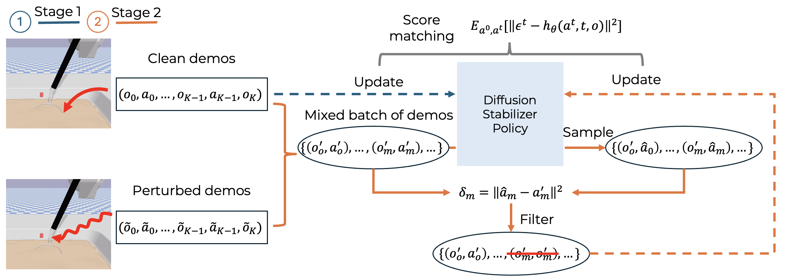
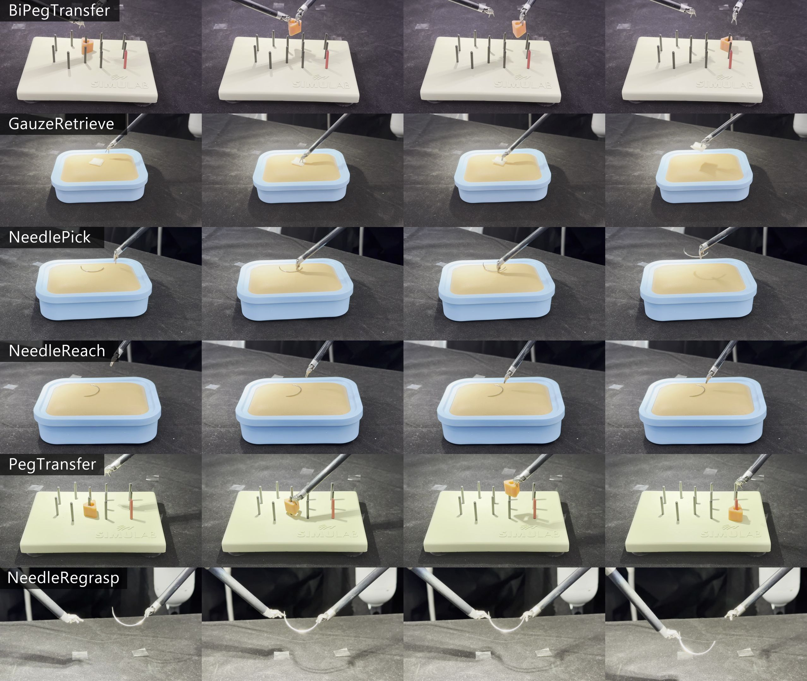
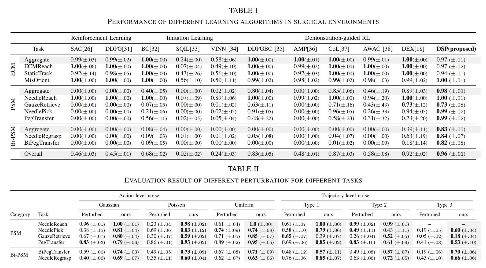

Diffusion Stabilizer Policy for Automated Surgical Robot Manipulations
Introduction Video
Abstract
Intelligent surgical robots have the potential to revolutionize clinical practice by enabling more precise and automated surgical procedures. However, automation for surgical tasks remains under-explored compared with recent progress on household manipulation. To extend modern policy learning methods to surgical robotics, this work proposes Diffusion Stabilizer Policy (DSP), a diffusion-based policy learning framework that enables training with imperfect, perturbed, or even failed trajectories. DSP first trains a diffusion stabilizer policy using only clean data, then continuously updates the policy with a mixture of clean and perturbed data filtered by action prediction error. Experiments in both simulation and real-world settings demonstrate superior performance under different perturbation types.

An overview of the framework The training framework first learns on clean demonstrations, then filters a mixed batch of clean and perturbed samples according to the error between predicted and recorded actions before continuing policy updates.

Real-world task executions Keyframe sequences of task executions on the real robotic platform; each row shows one surgical task and each column represents a similar execution phase such as approach, grasp, transfer, or placement.

Quantitative main results Tables I and II from the paper. The reported results compare DSP against multiple baselines across ECM, PSM, and Bi-PSM tasks, and evaluate performance under different action-level and trajectory-level perturbations.
BibTeX
@article{ho2025dsp,
title={Diffusion Stabilizer Policy for Automated Surgical Robot Manipulations},
author={Ho, Chonlam and Hu, Jianshu and Song, Lei and Wang, Hesheng and Dou, Qi and Ban, Yutong},
journal={arXiv preprint arXiv:2503.01252},
year={2025},
url={https://arxiv.org/abs/2503.01252}
}